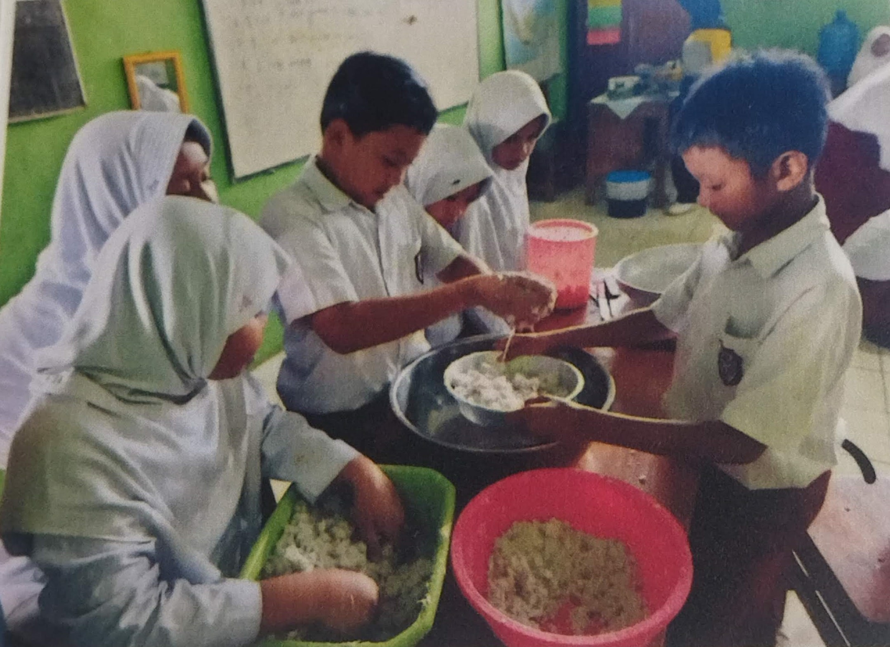

Praktik Pembuatan Dawet Ayu Banjarnegara
Siswa SD Negeri 2 Gumiwang mengikuti kegiatan belajar dengan metode kreatif yang membuat suasana kelas hidup.
Siswa SD Negeri 2 Gumiwang mengikuti kegiatan belajar dengan metode kreatif yang membuat suasana kelas hidup.

Berbagai pertunjukan seni dan budaya dipersembahkan oleh siswa-siswi SD Negeri 2 Gumiwang.
Siswa dan guru bersama-sama menanam pohon memanfaatkan limbah non-organik untuk menciptakan lingkungan sekolah yang asri dan sehat.
Siswa-siswi melaksanakan simulasi Asesmen Nasional Berbasis Komputer (ANBK) untuk meningkatkan kesiapan menghadapi ujian nasional berbasis digital.
Siswa dan guru mengikuti kegiatan senam bersama setiap pagi di hari Selasa dan Jumat untuk menjaga kebugaran dan kesehatan tubuh.
Siswa berprestasi SD Negeri 2 Gumiwang menerima penghargaan atas pencapaian mereka dalam berbagai lomba pada saat upacara bendera.